147 — DDD, bounded contexts y ownership de datos
Parte: 12 — Arquitectura cloud-native y sistemas distribuidos
Nivel: avanzado-experto · Horas estimadas: 4
Laboratorio: architecture · Estado: EXECUTABLE_CORE
🎯 Propósito
Decidir dónde van las fronteras, que es la decisión de la que dependen todas las demás de esta parte. La clase defiende que no las decide la tecnología sino dos cosas concretas: dónde cambia el significado de las palabras y quién puede modificar cada dato. Da una técnica para encontrarlas en horas en vez de en meses, establece la regla que hace que todo lo demás funcione —un solo escritor por dato— y desarrolla la pieza que más problemas evita en sistemas reales: la capa que traduce el modelo ajeno en la frontera para que no se filtre hacia dentro.
📚 Resultados de aprendizaje
Al finalizar podrás:
- Encontrar fronteras buscando dónde una misma palabra significa cosas distintas.
- Asignar un único escritor a cada dato y derivar de ahí la separación.
- Elegir la relación entre contextos y aislar los modelos ajenos.
- Delimitar la unidad de consistencia y saber qué queda fuera de ella.
- Decidir dónde invertir esfuerzo y qué adoptar tal cual.
🧩 Conceptos centrales
| Concepto | Comprensión verificable |
|---|---|
contexto acotado |
Región donde cada palabra tiene un único significado y un modelo coherente. Fuera de ella, la misma palabra puede significar otra cosa. |
un solo escritor |
Cada dato tiene exactamente un contexto que puede modificarlo. Los demás tienen copia o preguntan. |
base de datos de integración |
Base compartida por varios contextos que escriben en las mismas tablas. Es lo que impide desplegar y evolucionar por separado. |
capa de traducción |
Código en la frontera que convierte el modelo ajeno al propio, para que el ajeno no se filtre hacia dentro. |
unidad de consistencia |
Conjunto de datos que cambia junto, en una transacción. Lo que la cruza es eventualmente consistente. |
subdominio central |
La parte que diferencia al negocio. Es donde se invierte; lo genérico se adopta tal cual. |
🧠 Modelo mental
Una arquitectura es un conjunto de decisiones costosas de cambiar; su calidad se juzga contra escenarios concretos, no por la cantidad de servicios usados.
Aplicado a esta clase, separa siempre cuatro planos: intención (qué necesita el usuario), configuración (qué declaramos), estado observado (qué existe de verdad) y evidencia (cómo sabemos que cumple). Confundirlos produce diseños que se ven correctos en un diagrama pero fallan al operar.
🗺️ Flujo de razonamiento

📖 Desarrollo
1. La frontera está donde cambia el significado
La técnica más útil de esta materia cabe en una frase:
busca dónde la misma palabra significa cosas distintas
Y el ejemplo canónico de cualquier tienda:
«PEDIDO» para VENTAS
una cesta confirmada, con precios, descuentos y método de pago
se cierra cuando se cobra
«PEDIDO» para ALMACÉN
una lista de artículos que hay que localizar y empaquetar
puede partirse en tres envíos, y le da igual el precio
«PEDIDO» para FACTURACIÓN
una base imponible con impuestos y un documento legal
puede rectificarse años después
«PEDIDO» para SOPORTE
un caso, con su historial de conversaciones
Cuatro cosas distintas con el mismo nombre. Y las consecuencias de no separarlas:
un modelo único intenta servir a las cuatro
→ acumula campos que solo usa uno
→ cada cambio afecta a los cuatro equipos
→ y las discusiones son sobre el significado, no sobre el código
Y dos señales más de que hay una frontera:
la misma palabra significa lo mismo pero con DETALLE distinto
ventas necesita el cliente completo; almacén solo su dirección
los ciclos de vida no coinciden
el pedido de ventas termina al cobrar
el de facturación sigue vivo cuatro años
Y la técnica para encontrarlas en horas, sin un año de análisis:
1. escribir los HECHOS del negocio en orden temporal
«cesta confirmada», «pago autorizado», «pedido preparado»,
«envío entregado», «factura emitida», «devolución solicitada»
2. anotar quién reacciona a cada hecho y quién lo produce
3. agrupar por quién habla el mismo idioma
4. y marcar los puntos donde una palabra cambia de significado:
ahí está la frontera
Y lo que no decide una frontera, aunque se use constantemente:
la tecnología «el servicio de base de datos», «el servicio de API»
la capa separar por capas produce fronteras que hay que
cruzar en cada operación
el organigrama por accidente; aunque el organigrama SÍ importa
como restricción clase 145
el tamaño «cada servicio no más de N líneas» no es un criterio
2. Un solo escritor por dato
Esta es la regla que convierte una idea de modelado en una decisión de arquitectura:
cada dato tiene EXACTAMENTE UN contexto que puede modificarlo
los demás tienen una copia, o preguntan
Y de ella se derivan casi todas las decisiones posteriores:
quién expone qué operación
qué se publica como hecho clase 115
qué se puede desplegar sin coordinar
y quién está de guardia de qué clase 095
El antipatrón correspondiente tiene nombre propio:
BASE DE DATOS DE INTEGRACIÓN
varios contextos escriben en las mismas tablas
→ el esquema es un contrato implícito entre todos
→ nadie puede cambiarlo sin coordinar con todos
→ y una migración exige parar todo a la vez
Y conviene distinguirlo de algo parecido y aceptable:
compartir la INSTANCIA de base de datos aceptable, es economía
compartir las TABLAS y escribirlas esto es el antipatrón
Con esquemas separados y permisos separados, una sola instancia puede alojar varios contextos sin acoplarlos. Lo que acopla es quién escribe.
Y qué hacen los demás con un dato del que no son dueños:
COPIA LOCAL, actualizada por hechos clase 114
+ funciona con el dueño caído; rápido
− eventualmente consistente, y hay que mantenerla
PREGUNTAR AL DUEÑO
+ siempre al día
− acopla en tiempo de ejecución: si el dueño cae, tú caes
− y añade latencia y saltos clase 145
Y el criterio, que es el de la clase 145: si el atributo prioritario es disponibilidad, copia; si es exactitud del momento, pregunta.
Y una tercera vía muy usada y honesta: copia local con caducidad y degradación, que sirve el valor copiado y avisa de su antigüedad.
La unidad de consistencia, que enlaza con la parte 09:
dentro de una unidad una transacción; invariantes garantizadas
«las líneas de un pedido suman su total»
entre unidades NO hay transacción
→ compensaciones y estados intermedios clase 116
Y el error habitual es hacerlas demasiado grandes:
«el cliente y todos sus pedidos» como una unidad
→ dos operaciones sobre pedidos distintos del mismo cliente compiten
→ y la unidad crece sin límite clase 110
La regla práctica: la unidad es lo mínimo que debe cambiar junto para que una regla de negocio se cumpla. Todo lo demás, fuera.
3. Relaciones entre contextos
Dos contextos que se hablan tienen una relación, y conviene nombrarla porque determina quién soporta el coste del cambio:
PROVEEDOR Y CLIENTE
el proveedor publica un contrato y el cliente lo consume
el proveedor tiene en cuenta las necesidades del cliente
→ es la relación normal, y necesita el contrato de la clase 153
CONFORMISTA
el cliente acepta el modelo del proveedor tal cual
→ barato, y el modelo ajeno entra en tu casa
CAPA DE TRADUCCIÓN
el cliente traduce el modelo ajeno al suyo en la frontera
→ cuesta más y protege el modelo propio
NÚCLEO COMPARTIDO
dos contextos comparten modelo y código
→ acopla sus despliegues; usar solo con un equipo detrás de los dos
CAMINOS SEPARADOS
no se integran; se duplica a propósito
→ a veces es la respuesta correcta
Y la capa de traducción es la que más problemas evita en sistemas reales:
el proveedor de pago llama «transaction» a algo que en tu modelo
es un intento de cobro
su estado «PENDING_CAPTURE» no significa nada en tu dominio
y su identificador tiene su formato
sin traducción
esos nombres aparecen en tu base, en tus eventos y en tu interfaz
→ cambiar de proveedor obliga a tocar todo
→ y un cambio suyo se propaga hacia dentro
con traducción
una capa convierte su modelo al tuyo, en un solo sitio
→ cambiar de proveedor toca esa capa
→ y lo de dentro no se entera
Y se aplica a más cosas de las que parece:
proveedores externos casi siempre
sistemas heredados que no se pueden tocar siempre
otro contexto cuyo modelo no te convence cuando puedas permitírtelo
Y la señal de que falta una: vocabulario ajeno dentro de tu código. Si en el servicio de pedidos aparecen palabras del proveedor de pagos, el modelo ya se filtró.
Y el lenguaje publicado, que es lo que la clase 115 llamó contrato de eventos: un vocabulario común y estable que varios contextos entienden, distinto del modelo interno de cualquiera de ellos.
4. Dónde invertir, y cómo se estropea
No todas las partes merecen el mismo esfuerzo:
CENTRAL lo que diferencia al negocio
→ aquí se invierte: modelo propio, buen código,
los mejores del equipo
→ CloudShop: el motor de precios y promociones
DE APOYO necesario y no diferencia
→ se construye simple, sin sofisticación
→ gestión de pedidos estándar
GENÉRICO resuelto por el mercado
→ se adopta tal cual, sin personalizar
→ identidad, pagos, correo, facturación fiscal
Y las dos reglas que se derivan:
no construir lo genérico
no dejar que lo genérico dicte el modelo de lo central
→ y para lo segundo hace falta la capa de traducción
Y el error clásico: personalizar hasta el infinito una herramienta genérica porque «casi encaja», hasta que mantenerla cuesta más que haberla construido.
Cómo se estropea una división, con las causas por frecuencia:
FRONTERAS POR TECNOLOGÍA
«servicio de base de datos», «servicio de notificaciones»
→ cada operación de negocio cruza cuatro fronteras
→ y la latencia y los fallos parciales se multiplican
FRONTERAS POR CAPA
interfaz, lógica y datos como servicios distintos
→ mismo problema, con un nombre más respetable
DATOS COMPARTIDOS ENTRE CONTEXTOS
el antipatrón del apartado segundo
UN CONTEXTO SIN EQUIPO
ley 20: acaba sin dueño clase 144
DEMASIADOS CONTEXTOS PARA EL EQUIPO
restricción de la clase 145
Y dos comprobaciones que detectan una mala división antes de sufrirla:
1. ¿cuántas fronteras cruza una operación de negocio típica?
una o dos bien
cuatro o más la división está mal hecha
2. ¿cuántos equipos hay que coordinar para un cambio habitual?
uno bien
tres la frontera está en el sitio equivocado
La segunda es la definitiva: si un cambio frecuente exige coordinar a tres equipos, la frontera no está donde debería.
Y la lista de comprobación de la clase:
☐ están identificadas las palabras que significan cosas distintas
☐ cada contexto tiene un vocabulario propio, escrito
☐ cada dato tiene un único escritor, y está anotado quién
☐ ningún contexto escribe en las tablas de otro
☐ está decidido, por dato, si los demás copian o preguntan
☐ las unidades de consistencia son lo mínimo que debe cambiar junto
☐ lo que cruza unidades usa compensación, no transacción
☐ hay capa de traducción ante proveedores y sistemas heredados
☐ no aparece vocabulario ajeno dentro del modelo propio
☐ está clasificado qué es central, de apoyo y genérico
☐ cada contexto tiene un equipo detrás
☐ una operación típica cruza una o dos fronteras, no cuatro
☐ un cambio habitual no exige coordinar tres equipos
Y el cierre que enlaza con la clase siguiente: con las fronteras decididas por el significado y por la propiedad de los datos, queda una pregunta que suele hacerse primero y debería hacerse ahora: cuántas de esas fronteras se convierten en procesos separados, que es la materia de la clase 148.
🔬 Ejemplo trabajado
CloudShop tiene quince servicios divididos por criterios que nadie recuerda y una base de datos que once de ellos escriben. El ejercicio consiste en encontrar las fronteras reales y compararlas con las que hay.
Paso 1: los hechos del negocio, en orden.
Una sesión de dos horas con gente de ventas, almacén, facturación y soporte produjo treinta y un hechos. Los principales:
cesta confirmada → pago autorizado → pedido aceptado → artículos
reservados → pedido preparado → envío entregado → factura emitida
→ devolución solicitada → devolución recibida → abono emitido
Y al anotar quién produce y quién reacciona, apareció el agrupamiento:
ventas cesta, precios, promociones, aceptación
almacén reserva, preparación, envío
facturación factura, abono, impuestos
soporte casos, devoluciones desde el punto de vista del cliente
pagos autorización, captura, devolución de dinero
Paso 2: las palabras que significaban cosas distintas.
PEDIDO 4 significados, como en el apartado primero
CLIENTE ventas: quien compra, con su historial de compras
facturación: un sujeto fiscal con NIF y dirección legal
soporte: alguien con un correo y una conversación
DEVOLUCIÓN soporte: una solicitud del cliente
almacén: un paquete que va a llegar
facturación: un abono con efectos fiscales
pagos: una operación de devolución de dinero
PRECIO ventas: lo que se muestra, con promociones
facturación: base imponible sin impuestos
Cuatro palabras, catorce significados. Y en el modelo había una sola tabla para cada una.
Paso 3: comparar con la división existente.
servicios actuales 15
contextos identificados 5
servicios que no correspondían a ningún contexto
«servicio de base de datos» técnico 1
«servicio de API» capa 1
«servicio de notificaciones» técnico 1
«servicio de utilidades» cajón desastre 1
«servicio de informes» técnico 1
Y la comprobación del apartado cuarto, medida sobre el flujo de compra:
fronteras que cruzaba «confirmar un pedido» 7
equipos que había que coordinar para cambiar el cálculo
de un descuento 3
Siete fronteras y tres equipos para tocar un descuento. Las dos comprobaciones daban rojo.
Paso 4: los escritores.
tablas de la base compartida 84
tablas con más de un escritor 41
la peor: tabla «pedidos» escrita por 7 servicios
Y el efecto que llevaba dos años atribuido a la complejidad del negocio:
cambios de esquema en 12 meses 9
de ellos, que exigieron coordinar 3 o más equipos 9
tiempo medio de un cambio de esquema 5 semanas
incidentes por un cambio de esquema 3
Y al asignar un escritor por dato:
dato escritor único
estado comercial del pedido ventas
precio aplicado y promoción ventas
reserva y estado de preparación almacén
dirección de envío ventas escribe, almacén copia
importe fiscal y factura facturación
estado del cobro pagos
conversaciones y casos soporte
Y dos decisiones de copiar frente a preguntar, tomadas con el criterio de la clase 145:
almacén necesita la dirección de envío
atributo prioritario: disponibilidad (E2)
→ COPIA, actualizada por el hecho «pedido aceptado»
→ funciona con ventas caído
facturación necesita el importe final
atributo prioritario: exactitud
→ COPIA TAMBIÉN, porque el importe se congela al emitir la factura
→ y una factura no cambia si ventas cambia el precio después
La segunda es interesante: facturación no quiere el dato actual, quiere el que había en ese momento, y eso es una copia por definición.
Paso 5: la capa de traducción para pagos.
palabras del proveedor encontradas dentro del código propio
«transaction_id» en la tabla de pedidos sí
estado «PENDING_CAPTURE» en el modelo de dominio sí
códigos de error del proveedor en la interfaz de usuario sí
el formato de importe del proveedor (céntimos como texto) sí
servicios que conocían el vocabulario del proveedor 6
Y el coste medido cuando se integró el segundo proveedor:
```text sin traducción con traducción servicios que hubo que tocar 6 1 tiempo de la integración 7 semanas 9 días cambios en el modelo de dominio 4 0 cambios en la interfaz de usuario 2 0
Y el modelo propio quedó así:
```text
intento de cobro { id propio, importe, moneda, estado propio,
referencia externa opaca }
estados propios solicitado · autorizado · cobrado · rechazado ·
devuelto
Con cinco estados propios y una referencia opaca, los dos proveedores encajan y ninguno dicta nada.
Paso 6: dónde invertir.
CENTRAL motor de precios y promociones
→ equipo dedicado, modelo propio, buena cobertura
DE APOYO gestión de pedidos, preparación, casos
→ simple, sin sofisticación
GENÉRICO identidad, pagos, correo, facturación fiscal, búsqueda
→ adoptado tal cual, con capa de traducción
Y una decisión que se revirtió con esto delante:
había un proyecto para construir un motor de facturación fiscal propio
motivo «el producto de mercado no encaja al 100 %»
revisión es genérico; no diferencia el negocio
decisión se compró y se adaptó el proceso, no el producto
ahorro estimado 5 meses de dos personas
El resultado.
```text antes después servicios 15 8 contextos no definidos 5 servicios que no eran de ningún contexto 5 0 tablas con más de un escritor 41 0 esquemas separados por contexto no sí fronteras que cruza «confirmar pedido» 7 2 equipos a coordinar para cambiar un descuento 3 1 tiempo medio de un cambio de esquema 5 semanas 3 días servicios que conocen el vocabulario de pagos 6 1 tiempo de integrar un proveedor nuevo 7 semanas 9 días
Y los ocho servicios encajan con la restricción de la clase 145: **el equipo puede operar entre seis y ocho**.
**La lección que esta clase traslada a la parte 12**: la división existente tenía quince servicios y **cinco de ellos no correspondían a ninguna frontera del negocio**: eran capas y tecnologías con nombre de servicio. Y el problema que más costaba —cinco semanas para un cambio de esquema y tres equipos para tocar un descuento— no venía de tener demasiados servicios, sino de que **cuarenta y una tablas tenían más de un escritor**. La frontera no estaba en el despliegue: estaba en los datos, y ahí no había ninguna.
## 🧪 Laboratorio guiado
Ejecuta desde la raíz:
```bash
python classes/part-12-cloud-native-distributed-architecture/147-ddd-bounded-contexts-y-ownership-de-datos/lab.py
El laboratorio selecciona el motor de práctica architecture y produce
lab_result.json. El escenario, sus comprobaciones y el artefacto esperado corresponden a
esta clase; no requiere credenciales y deja explícito qué debe revalidarse en un sandbox real.
- Lee
exercise.stepsy formula una predicción antes de ejecutar. - Ejecuta la práctica y verifica todos los elementos de
checks. - Provoca el caso de
negative_testy explica la señal observada. - Materializa
context-mapenevidence/usando la plantilla indicada. - Para proveedor real, sigue
sandbox.requires, registra costo y ejecutadestroy.
Evidencia esperada
El artefacto principal es un diagrama acompañado por decisiones y trade-offs. Además, la entrega debe incluir el comando ejecutado, la salida estructurada y una conclusión que no exceda lo observado.
🏆 Reto verificable
Construye context-map para el caso CloudShop. Incluye una alternativa descartada,
un supuesto que pueda falsarse, una prueba de fallo y una decisión de rollback.
✅ Criterio de aceptación
- [ ]
lab.pytermina con código 0 y genera JSON válido. - [ ] La entrega conecta al menos tres requisitos con mecanismos verificables.
- [ ] Existe una prueba positiva y una prueba negativa con evidencia.
- [ ] Seguridad, costo y operación aparecen como decisiones, no como anexos.
- [ ] Se declara una limitación y una condición que obligaría a revisar el diseño.
- [ ] Otra persona puede repetir el recorrido sin conocimiento tácito.
⚠️ Errores frecuentes
| Síntoma | Causa probable | Corrección |
|---|---|---|
| Cada cambio de esquema exige coordinar a varios equipos | Varios contextos escriben en las mismas tablas: base de datos de integración | Asigna un único escritor a cada dato, separa esquemas y permisos, y que los demás copien o pregunten. |
| Discusiones interminables sobre qué campos lleva una entidad | Un solo modelo intenta servir a contextos donde la palabra significa cosas distintas | Busca dónde cambia el significado y separa; cada contexto tiene su propio modelo de la misma palabra. |
| Una operación de negocio cruza cuatro o más servicios | Las fronteras se trazaron por tecnología o por capa | Traza por contexto y propiedad de datos; mide cuántas fronteras cruza una operación típica. |
| Cambiar de proveedor obliga a tocar medio sistema | Su vocabulario y sus estados entraron en el modelo propio | Pon una capa de traducción en la frontera y guarda solo una referencia opaca. |
| Se construye una pieza que el mercado ya resuelve | No se clasificó qué es central, de apoyo y genérico | Invierte en lo central, simplifica lo de apoyo y adopta lo genérico sin personalizarlo. |
| Una unidad de consistencia crece sin límite y produce conflictos | Se agrupó de más: el cliente con todos sus pedidos | La unidad es lo mínimo que debe cambiar junto para que se cumpla una regla; lo demás va fuera y se coordina con compensación. |
🛡️ Seguridad, ética y costo
Trabaja con cuentas propias o sandboxes autorizados. No publiques secretos, identificadores reales ni datos personales. Antes de crear recursos pagos define presupuesto, etiquetas y comando de destrucción; después verifica que no queden recursos huérfanos. Los ejemplos locales enseñan contratos, pero no certifican cumplimiento ni disponibilidad de producción.
❓ Preguntas de comprobación
- ¿Qué señal indica que hay una frontera entre contextos?
- ¿Qué diferencia hay entre compartir la instancia de base de datos y compartir las tablas?
- ¿Cuándo conviene copiar un dato ajeno y cuándo preguntar por él?
- ¿Qué protege una capa de traducción y cómo se detecta que falta?
- ¿Qué dos comprobaciones revelan que una división está mal hecha?
🔗 Referencias
- Evans, E. (2003). Domain-Driven Design, parte IV — contextos acotados, mapas de contexto y capa de traducción. https://www.domainlanguage.com/ddd/
- Vernon, V. (2013). Implementing Domain-Driven Design, caps. 2-3 — contextos, relaciones y lenguaje. https://www.informit.com/store/implementing-domain-driven-design-9780321834577
- Brandolini, A. (2025). Event storming — encontrar fronteras a partir de los hechos del negocio. https://www.eventstorming.com/
- Fowler, M. (2025). Bounded context and integration database — el antipatrón de la base compartida. https://martinfowler.com/bliki/BoundedContext.html
- Skelton, M. y Pais, M. (2019). Team Topologies, cap. 6 — una frontera necesita un equipo detrás. https://teamtopologies.com/book
- Documentación oficial vigente del servicio implementado; registra URL y fecha de consulta.
📥 Descargar: Parte 12 en PDF · Manual integral